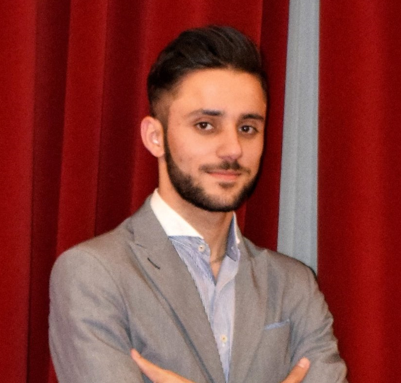

Go back

Florin OMRAN
Details:
- Address: Bucharest, Colentina
- Phone: 0720.172.377
- E-Mail: florin.omran@gmail.com
- Date of birth: 15-Apr-1995
-
Education:
I am constantly studying and learning new things
Computer Science
- at Wellcode
-
I’ve learned basics of C++, solved over 150 algorithmic problems and
studied object-oriented programming in JavaScript.
- January 2021 – July 2021
Computer Science: HTML, CSS, JavaScript, ReactJS – basis
- at CodeBerry Programming School
- August 2021 – December 2021
Bachelor of Science Degree in Communication and Public Relations
- at Titu Maiorescu University
- 2016 – 2020
Work Experience:
Analyst Consulting EMEA Business Transactions
- at ORACLE
-
I’ve learned basics of C++, solved over 150 algorithmic problems and
studied object-oriented programming in JavaScript.
- May 2019 – Present
Customer Service Agent
- at CGS (Computer Generated Solutions)
- March 2018 – February 2019
Event Planner
- at The Romanian Association for Smart City
- July 2017 – February 2018